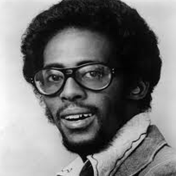

David Ruffin
Davis Eli "David" Ruffin (January 18, 1941 – June 1, 1991) was an American soul singer and musician most famous for his work as one of the lead singers of the Temptations from 1964 to 1968 (or the group's "Classic Five" period as it was later known). He was the lead voice on such famous songs as "My Girl" and "Ain't Too Proud to Beg." Known for his unique raspy and anguished tenor vocals, Ruffin was ranked as one of the 100 Greatest Singers of All Time by Rolling Stone magazine in 2008. He was inducted into the Rock and Roll Hall of Fame in 1989 for his work with the Temptations. Fellow Motown recording artist Marvin Gaye once said admiringly of Ruffin that, "I heard in [his voice] a strength my own voice lacked."
Early years and career
Ruffin was born Davis Eli Ruffin on January 18, 1941 in the rural unincorporated community of Whynot, Mississippi, the son of Eli, a Baptist minister, and Ophelia Ruffin (née Davis). His father was strict and at times violently abusive. Ruffin's mother died just months after his birth and his father married a schoolteacher, Earline, in 1942. As a young child, Ruffin, along with his other siblings (older brothers Quincy and Jimmy, and sister Rita Mae), traveled with their father and their stepmother as a family gospel group opening shows for Mahalia Jackson and The Five Blind Boys of Mississippi among others. He also had an older sister Rosetta who died as a child. Ruffin sang in the choir at Mount Salem Methodist Church, talent shows, and wherever else he could. In 1955, at the age of fourteen, he left home under the guardianship of a minister and went to Memphis, Tennessee with the purpose of pursuing the ministry.
At age 15, Ruffin went to Hot Springs, Arkansas with the jazz musician Phineas Newborn, Sr. There they played at the Fifty Grand Ballroom and Casino. Ruffin continued to sing at talent shows, worked with horses at a jockey club and eventually became a member of the Dixie Nightingales. He also sang with the Soul Stirrers briefly after the departure of Johnnie Taylor. It was in Ruffin's travels as a teenager that he met such later popular personalities as Elvis Presley, Little Richard, Frankie Lymon, Bobby Womack, the Staple Singers, the Swan Silvertones and the Dixie Hummingbirds.
After some of his singing idols like Sam Cooke and Jackie Wilson had left gospel music and gone secular, Ruffin also turned in that direction. He met and came under the guardianship of Eddie Bush and Dorothy Helen who took David to Detroit, Michigan and introduced him to Gwen Gordy Fuqua, Berry Gordy's sister and Billy Davis. Asked about Ruffin in the Detroit Free Press in 1988, Gordy Fuqua said, "He was very much a gentleman, yes ma'am and no ma'am, but the thing that really impressed me about David was that he was one of the only artists I've seen who rehearsed like he was on stage."In Detroit, his brother Jimmy Ruffin was pursuing a career in music while working at the Ford Motor Company. Jimmy landed a deal with Miracle Records, one of several labels owned by Berry Gordy's Tamla (later Motown) Records. On the StreetGold video The Original Leads of the Temptations, Ruffin explained how he went to Detroit and began to record a different kind of music. He said that he met Berry Gordy in 1957. Ruffin stated that Marvin Gaye and he used to pack records for Anna Records, which was a Chess-distributed label formed in 1958 by Gordy Fuqua and Billy Davis, and that he at one time lived with Berry Gordy’s father (who was a contractor) and worked with him in the building construction of Motown.
Early career
Strongly inspired by pop and R&B music of the time, Ruffin recorded his first released records with the songs "You and I" (1958) b/w "Believe Me" (1958) and the original version of "Statue of A Fool." "You and I" a melodic ballad with a 17-year-old Ruffin as he portrays a young man wanting him and his dream girl to be a pair, and the B-side "Believe Me" which was more of an uptempo song. These songs were recorded at VEGA Records and released under the name "Little David Bush", using the last name of the man he had met previously, Eddie Bush. Ruffin eventually started recording at Anna Records, and recorded the song "I'm in Love" b/w "One of These Days" (1961), with the Voice Masters, which included future Motown producer Lamont Dozier and members of the singing group the Originals Ty Hunter, C.P. Spencer and Voice Masters and The Originals founder Walter Gaines (and, at one time, it also had another future Temptations member, Melvin Franklin, one of numerous people David would claim as a cousin). Later Billy (a/k/a "Roquel')Davis formed Check-Mate Records taking Ruffin with him. While there, he recorded the songs "Mr. Bus Driver (Please Hurry)", a minor local hit, b/w "Knock You Out With Love" (1962). He then recorded the songs, "Actions Speak Louder Than Words" b/w "You Can Get What I Got" (1961). Though Ruffin's name is on the label, the Voice Masters provide backup. Ruffin eventually met an up-and-coming local group by the name of The Temptations. His older brother Jimmy Ruffin went on a Motortown Revue tour with the Temptations, and he told David that they needed someone to sing tenor in their group. Ruffin showed interest in joining the group to Otis Williams whom he lived very close to in Detroit. In January 1964, Ruffin became a member of the Temptations after founding member Elbridge "Al" Bryant was fired from the group (Ruffin's first recording session with the group was January 9, 1964). Though both David and his brother Jimmy were considered, David was given an edge over Jimmy thanks to his performance skills, which David displayed when he joined the Temptations on-stage during the New Year's Eve party in 1963.